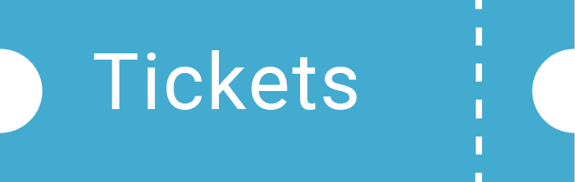
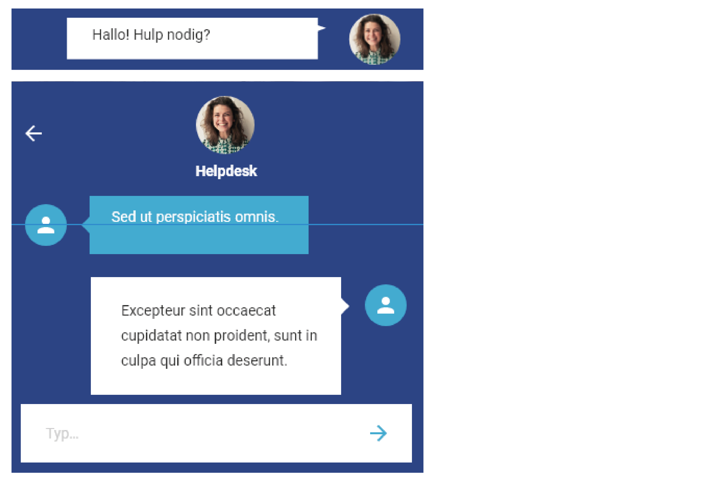
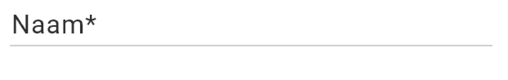

Digital styleguide
Intro
Deze digitale huisstijlgids geeft een kort overzicht van de basiselementen die gebruikt worden op de website van Daddy Cool.In dit document komt u onder andere meer te weten over het gebruik van kleuren, logo, navigatie en tekst.Indien u vragen hebt, aarzel dan niet om contact op te nemen. Contactinfo vindt u terug op onze website.
Logo
Het corporate logo van Daddy Cool bestaat uit een vierkant met daarin 'Daddy Cool'. Als baseline wordt de datum en de stad geplaatst. De baseline komt steeds onder de naam. Als ornament wordt een handje gebruikt dat steeds een lijn heeft, maar geen vulkleur. Het hand wordt steeds boven de naam geplaatst. De tekst is steeds wit. De kader bestaat uit gekleurde vlakken. Het logo wordt steeds gebruikt op een gekleurde, effen achtergrond. De achtergrond mag niet wit zijn.
Als alternatief op een witte achtergrond kan steeds de naam gebruikt worden, met daaronder de baseline. Dit kan gebruikt worden zoals volgende voorbeelden.

plaats van het logo
Zowel in de header als de footer wordt het logo in de linkerbovenhoek geplaatst. Om de consistentie van onze huisstijl te behouden, wordt hier niet van afgeweken.
navigatie
De navigatie is opgebouwd uit een gekleurde balk. Links bovenaan wordt steeds het logo weergegeven. In de rechterbovenhoek worden de iconen voor social media en de taalaanduiding geplaatst. Elk onderdeel van de navigatie wordt gescheiden door een schuine balk, waarin de basiskleuren van het logo terugkomen.Wanneer een woord in het blauw staat, geeft dit aan dat u zich op die pagina bevindt.

tekst
Als lettertype wordt Roboto gebruikt. U kunt kiezen uit de volledige familie van Roboto. Op de website wordt voornamelijk gewerkt met Roboto bold, medium en regular. Titels, ondertitels en broodtekst kregen vaste verhoudingen, zoals u hieronder kan zien. Hierin mogen wijzigingen aangebracht worden zolang de verhoudingen gerespecteerd blijven.
De standaard interlinie wordt gebruikt, behalve bij de broodtekst. Daar werd gekozen voor een interlinie van 22 om de leesbaarheid te verhogen.
iconen
De website van 'Daddy Cool' maakt enkel voor de verwijzing naar sociale media gebruik van iconen. Deze worden steeds linksboven in de header geplaatst. Alleen de hier afgebeelde iconen mogen gebruikt worden.
De iconen staan steeds in het wit op een gekleurde achtergrond.

kleuren

grafische elementen
Rond belangrijke stukken tekst, quotes of titels kan een grafisch element gebruikt worden. Dit wordt telkens linksboven en rechtsonder gebruikt. Een voorbeeld van dit grafisch element ziet u hier.
Let erop dat er genoeg afstand van de tekst gehouden wordt, zodat het geheel duidelijk blijft. De minimale afstand bedraagt 5px.
knoppen
Knop 1
- Roboto regular 24pt
- margin min 10px
- Statisch: border-bottom van 3 px solid in rgba(0,0,0,.3), background-color rgb(44,67,133), color rgb(255,255,255)
- Hover: background-color rgb(0,72,153)
- Active:bottom-border van 3 px solid in rgba(0,0,0,.3) en background-color rgb(0,72,153)
Knop 2
- Roboto medium 28pt
- margin min 5px
- Statisch: background-color rgb(266,266,266), color rgb(45,45,44)
- Hover: border-bottom van 3 px solid in rgb(44,67,133)
- Active: border-bottom van 3 px solid in rgb(44,67,133)
Knop 3
- 28pt
- margin min 5px
- background-color rgb(39,34,100), color rgb(255,255,255)
Knop 4
Knop 5
knop 6
- Roboto regular 28pt
- margin min 5px
- Statisch: background-color rgb(266,266,266), color rgb(45,45,44)
- Hover: background-color: rgb(172, 172, 169)
Rechts wordt steeds een afbeelding van de kaart toegevoegd.
Forms
Bestellen van tickets gebeurt met een dropdown-box.
Deze checkbox met vinkje in rgb(69,171,208) wordt gebruikt om de algemene voorwaarden te aanvaarden.
Het invulveld is wit met een rand in rgb(45,45,44). De tekst staat steeds links bovenaan in Roboto regular 28 of 24px
Deze form wordt gebruikt bij de betaling en geeft aan hoeveel stappen er nog moeten gedaan worden. Een bolletje in de kleur rgb(255,106,0) geeft de stap aan.
Via dit dropdownmenu worden veel gestelde vragen beantwoord. De vraag staat in Roboto regular 28px of 24px, het antwoord in 16px
Links onderaan elke pagina bevindt zich een livechat. zolang de bezoeker niet geklikt heeft, is enkel de bovenste kader zichtbaar. Bij het klikken komt het chatvenster tevoorschijn.
Het contactformulier en het inschrijven op de nieuwsbrief gebeuren met onderstaand invulveld. Ook hier staat de tekst in Roboto regular 24 of 18px. Een asterisk geeft de verplichte velden aan.
Foutmeldingen
Wanneer niks aangeduid of ingevuld wordt, verschijnt bovenaan de pagina steeds de melding in Roboto regular 24pt rgb(242,32,32):
Voor een checkbox verschijnt dan de volgende formulering: